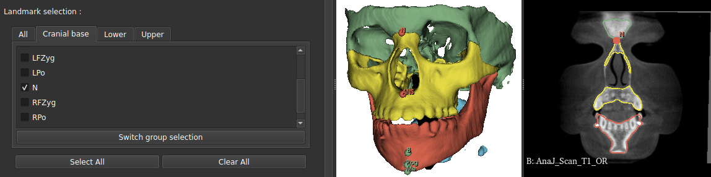
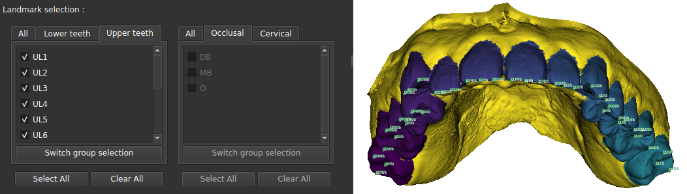

ALI: posizionare i landmark automaticamente
ALI colloca per te i landmark anatomici sulle tue scansioni. Funziona altrettanto bene su un CBCT (un volume) e su una scansione intraorale (una superficie), con due motori diversi dietro un'unica finestra.
Questa pagina descrive il modulo Slicer legacy. Per usarlo tramite un server VISOR: vedi ALI con VISOR e Usare VISOR.
Quando usarlo
Ogni volta che servono dei landmark e posizionarli a mano richiederebbe troppo tempo: una dozzina di punti su un paziente è gestibile; su una serie di quaranta, non più. ALI fornisce inoltre i landmark a diversi altri moduli: se esegui un orientamento o una registrazione automatici, potrebbe già essere in esecuzione dietro le quinte senza che tu debba aprirlo.
Il modulo sceglie da solo il motore giusto in base ai tuoi dati: CBCT per un volume, IOS per una scansione intraorale. Tu devi solo indicare di che tipo sono i tuoi file e quali punti vuoi.
Di che cosa ha bisogno, che cosa ottieni
Da fornire
- Una cartella di scansioni: CBCT in
.nii.gz, oppure scansioni intraorali in.vtk - Il gruppo di punti desiderato, selezionato nell'elenco
- I modelli addestrati, scaricati una sola volta
Che cosa ne esce
- Un file di landmark per scansione e per gruppo, nel formato di Slicer (
.mrk.json) - Si apre direttamente nella scena, con punti trascinabili con il mouse
- Le scansioni originali non vengono toccate
- Basion
Ba - Sella
S - Nasion
N - Porion destro
RPo - Porion sinistro
LPo - Frontozigomatico destro
RFZyg - Frontozigomatico sinistro
LFZyg - Vertebra C2
C2
.mrk.json per gruppo, con le scansioni lasciate intatte. I punti del CBCT sono reali: ALI li ha collocati sulla scansione di test pubblicata. Due dei dieci richiesti, C3 e C4, non sono stati trovati: la scansione non arriva così in basso lungo il collo, quindi sono semplicemente assenti, ed è esattamente ciò che fa il modulo. I punti intraorali sono illustrativi.Passi
- Scarica i modelli. Il pulsante «Download latest models» scarica i pesi addestrati. Serve una sola volta, ma è essenziale: senza di essi il modulo non ha nulla su cui basare le predizioni.
- Scegli il tipo di dati. CBCT o scansione intraorale. Questo decide quale motore viene usato.
- Indica la cartella di input. ALI elabora l'intera cartella in un colpo solo; non serve eseguirlo paziente per paziente.
- Seleziona i punti che vuoi. Sono raggruppati per regione. Seleziona solo ciò che serve davvero: ogni punto aggiunge tempo di calcolo.
- Imposta una cartella di output, poi avvia. Una barra di avanzamento segue i pazienti man mano che vengono elaborati.


Quanto tempo ci vuole
Prevedi circa 15 secondi per punto e per paziente con una scheda grafica, e fino a un minuto senza. Con dieci punti e trenta pazienti, questa differenza smette di essere trascurabile: all'incirca un'ora contro cinque. Il modulo funziona benissimo senza GPU, ma per una serie numerosa conviene prevedere un'esecuzione notturna.
Se qualcosa non va
Controlla prima che i modelli siano stati davvero scaricati, poi che il tipo di dati selezionato corrisponda ai tuoi file. Un CBCT elaborato come scansione intraorale non produrrà nulla di utilizzabile.
Su una scansione intraorale, il motore punta le sue misure dente per dente. Se il tuo file non ha ancora l'identificazione delle corone, ALI la esegue automaticamente lungo il percorso: aspettati un tempo in più al primo tentativo.
Usa invece file .nii.gz. Il percorso DICOM del modulo non funziona in modalità automatica.
La cartella temporanea non viene svuotata dopo l'esecuzione. Su serie lunghe, ricordati di ripulirla di tanto in tanto.
Cosa fare dopo
I landmark che ottieni sono un punto di partenza, non la verità di riferimento: aprili in Slicer e controllali prima di usarli per una misura o una registrazione. Si possono trascinare con il mouse come qualsiasi altro markup.
Come citare
Se hai usato ALI nella tua ricerca, cita:
Gillot M, Miranda F, Baquero B, Ruellas A, Gurgel M, Al Turkestani N, Anchling L, Hutin N, Biggs E, Yatabe M, Paniagua B, Fillion-Robin JC, Allemang D, Bianchi J, Cevidanes L, Prieto JC. Automatic landmark identification in cone-beam computed tomography. Orthodontics & Craniofacial Research, 2023, 26(4), 560-567.
doi:10.1111/ocr.12642. L'articolo alla base del percorso CBCT: agenti che percorrono il volume fino al landmark. Riporta l'errore misurato, landmark per landmark.
Baquero B, Gillot M, Cevidanes L, Al Turkestani N, Gurgel M, Leclercq M, Bianchi J, Yatabe M, Ruellas A, Massaro C, Aliaga A, Alvarez Castrillon MA, Rey D, Aristizabal JF, Prieto JC. Automatic Landmark Identification on IntraOralScans. In: Clinical Image-Based Procedures (CLIP 2022), Lecture Notes in Computer Science vol. 13746, Springer Cham, 2023, p. 32-42.
doi:10.1007/978-3-031-23179-7_4. L'articolo alla base del percorso su mesh: la superficie viene fotografata da più punti di vista e ogni pixel vota per un landmark.
Contesto, non una citazione dello strumento
- Alansary et al., Medical Image Analysis 2019: Evaluating reinforcement learning agents for anatomical landmark detection. Da dove nasce l'idea dell'agente che cammina, e quanto costa rispetto alla regressione diretta delle coordinate.
- Boubolo et al., SPIE Medical Imaging 2021: FlyBy CNN: a 3D surface segmentation framework. Il rendering multi-vista su cui si fonda il percorso su mesh.
La bibliografia completa dello strumento, ciò che è stato trovato e ciò che è stato cercato senza successo, si trova nelle sue fonti.
Come funziona davvero → La pagina dell'Atlante: i due motori, che cosa è predetto e che cosa è calcolato, i pesi usati e i limiti trovati nel codice.